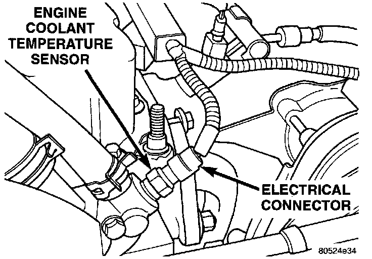

Coolant Temperature Sensor/Switch (For Computer): Service and Repair
ENGINE COOLANT TEMPERATURE SENSORWARNING: Hot, pressurized coolant can cause injury by scalding. Cooling system must be partially drained before removing the coolant temperature sensor.
Fig. 88 ECT Sensor:

The coolant temperature sensor is installed in the thermostat housing (Fig. 88).
REMOVAL
1. Partially drain cooling system until the coolant level is below the cylinder head.
2. Disconnect the coolant temperature sensor wire connector.
3. Remove the sensor from the thermostat housing.
INSTALLATION
1. Apply sealant to sensor threads.
2. Install coolant temperature sensor into the thermostat housing. Tighten to 11 Nm (8 ft. lbs.) torque.
3. Connect the wire connector.
4. Fill the cooling system.